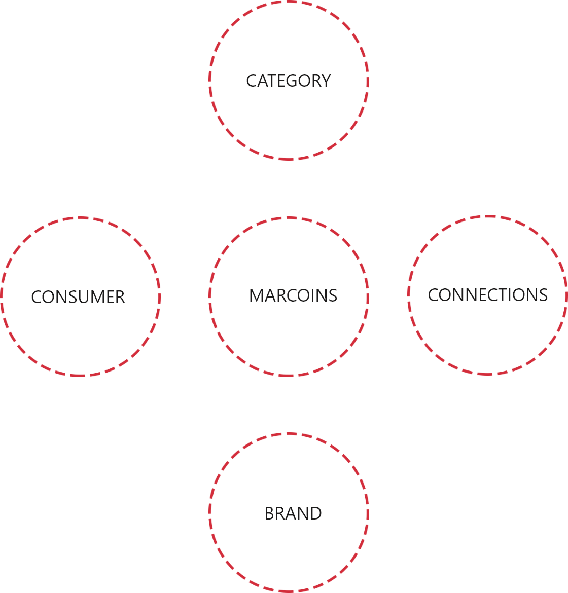
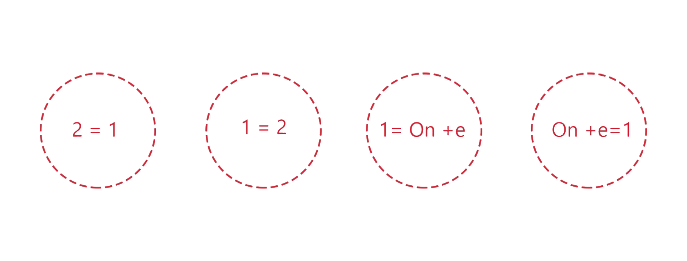

Never-ending Thinking
At Insight, we are not merely creative by default, we are creative by design. We are thoroughored thinkers and this discipline is born out of a complusive need to create only the very best work. When we create, we seek to break the box, to leave a mark.
Two dance steps:
- Category to brand.
- Consumer to connection.

How we create
